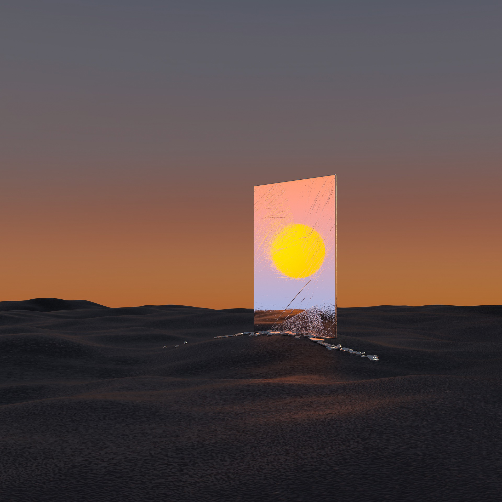
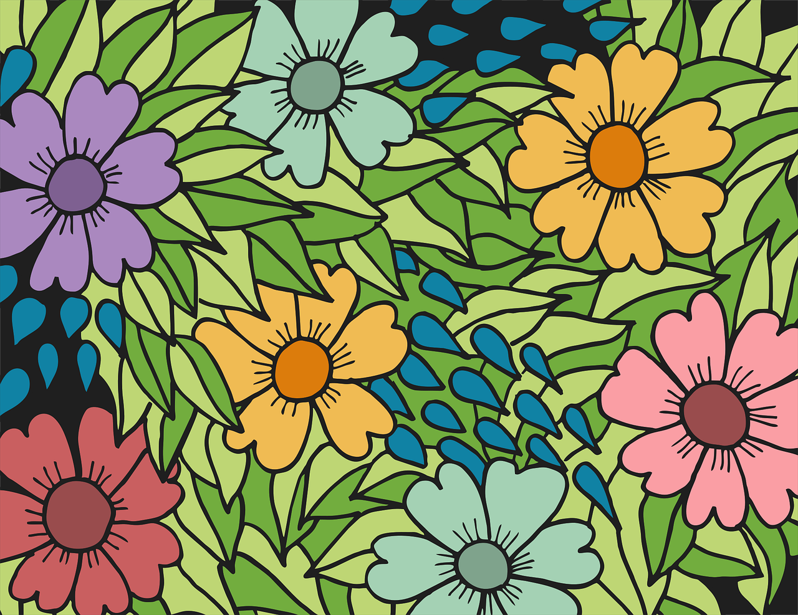

镜子、海岸、落日、沙漠
Trend
Design
Mirrors, coasts, sunsets and deserts
Fashion is like a colorful screen. In a flash, it becomes its color.
I need to be different and irreplaceable.
Designers are reimagining soignée staples for spring and summer─skirt suits, twin sets,
below-the-knee dresses, kitten heels and frame bags─that appear anything but moth-eaten. in
fact,
fashion's neoconservative coup d'état feels deliciously defiant, given the excessively revealing
styles pop culture celebrates. a quick flip through any supermarket tabloid yields an onslaught
of
oversexed stars and their indelicate fashion choices.
Is conservative the new radical? the fashion world certainly seems to think so. this season,
designers filled their runways with restrained silhouettes that echo the graceful,
showing-less-is-more aesthetic of generations past.
Designers appreciate it when attendees wear their brand to their show. most design houses will
even
ensure that the celebrities are “appropriately” dressed in designer wear once they agree to
attend.